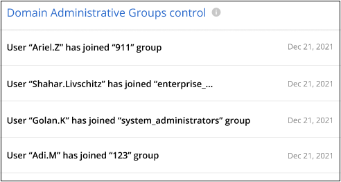
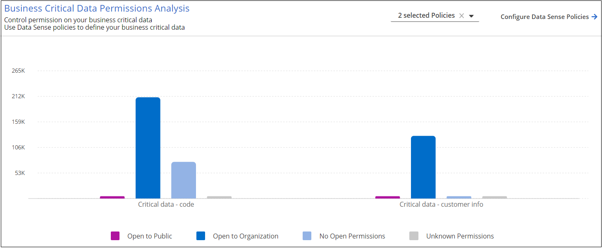

ドキュメントの変更をリクエスト
ドキュメントの変更をリクエスト GitHub で編集
GitHub で編集 寄稿者向けガイド
寄稿者向けガイドデータソースに対するサイバーセキュリティの推奨事項を管理します
Ransomware Protection ダッシュボードでは、すべての作業環境とデータソースのサイバー復元力の概要を確認できます。各領域にドリルダウンすると、詳細および考えられる対処方法を確認できます。

サイバーレジリエンスマップ
レジリエンス・マップは、ダッシュボードのメイン領域です。これにより、すべての作業環境とデータソースを視覚的に表示し、関連するサイバー復元情報を表示できます。

マップは 3 つの部分で構成されています。
- 左パネル
-
すべてのデータソースについてサービスが監視しているアラートのリストが表示されます。また、環境内でアクティブになっている個々のアラートの数も示します。アラートの種類を 1 つ多く設定することは、そのアラートを先に解決しようとするよい理由になります。
- センターパネル
-
すべてのデータソース、サービス、および Active Directory がグラフ形式で表示されます。正常な環境では、緑のインジケータが表示され、アラートがある環境では赤色のインジケータが表示されます。
- 右パネル
-
赤のインジケータが表示されているデータソースをクリックすると、そのデータソースのアラートが表示され、アラートを解決するための推奨事項が提示されます。アラートはソートされて、最新のアラートが最初に表示されます。さまざまな推奨事項があるため、別の Cloud Manager サービスを利用して問題 を解決できます。
これらは、現在追跡されているアラートおよび推奨される対処方法です。
| アラート | 説明 | 修正 |
|---|---|---|
高いデータ暗号化レートが検出されました |
データソースで暗号化ファイルまたは破損ファイルの割合が異常に増加しています。つまり、過去 7 日間の暗号化ファイルの割合が 20% を超えました。たとえば、ファイルの 50% が暗号化されている場合は、この値が 1 日後に 60% に増えてしまうと、このアラートが表示されます。 |
リンクをクリックしてを起動します "Data Sense Investigation ページ"。ここでは、特定の _ 作業環境 _ および _ カテゴリ（暗号化および破損） _ のフィルタを選択して、すべての暗号化および破損したファイルのリストを表示できます。 |
広範囲の権限を持つ機密データが見つかりました |
機密データがファイルに見つかりました。データソースのアクセス権限レベルが高すぎます。 |
リンクをクリックしてを起動します "Data Sense Investigation ページ"。ここでは、特定の _ 作業環境 _ 、 _ 感度レベル（機密性の高い個人） _ 、 _ 許可 _ のフィルタを選択して、この問題 を持つファイルのリストを表示できます。 |
Cloud Backup を使用してバックアップされていないボリュームがあります |
を使用して、作業環境内の一部のボリュームが保護されていません "クラウドバックアップ"。 |
リンクをクリックして Cloud Backup を起動し、作業環境にバックアップされていないボリュームを特定してから、それらのボリュームでバックアップを有効にするかどうかを決定します。 |
データソース内の 1 つ以上のリポジトリ（ボリューム、バケットなど）がデータセンスでスキャンされていません |
データソースの一部のデータがを使用してスキャンされていません "クラウドデータの意味" コンプライアンスやプライバシーに関する懸念を特定し、最適化の機会を見つける。 |
リンクをクリックして Data Sense を起動し、スキャンされていない項目のスキャンとマッピングを有効にします。 |
組み込みのランサムウェア対策は、ボリュームによってはアクティブにならない場合があります |
オンプレミスのONTAP システムにある一部のボリュームにはがありません "ネットアップのランサムウェア対策機能" 有効。 |
リンクをクリックすると、にリダイレクトされます ONTAP 環境パネルを強化します 問題 を使用して作業環境にアクセスできます。ここで、問題 の修正方法を調査できます。 |
ONTAP のバージョンが更新されていません |
クラスタにインストールされているONTAP ソフトウェアのバージョンが、での推奨事項に従っていません "『 NetApp Security Hardening Guide for ONTAP Systems 』を参照してください"。 |
リンクをクリックすると、にリダイレクトされます ONTAP 環境パネルを強化します 問題 を使用して作業環境にアクセスできます。ここで、問題 の修正方法を調査できます。 |
一部のボリュームに対してSnapshotが設定されていません |
作業環境内の一部のボリュームは、ボリュームSnapshotを作成して保護されていません。 |
リンクをクリックすると、にリダイレクトされます ONTAP 環境パネルを強化します 問題 を使用して作業環境にアクセスできます。ここで、問題 の修正方法を調査できます。 |
データの感度が高い上位のデータリポジトリ
Top Data Repositories by Sensitivity Level パネルには、最も機密性の高い項目を含む上位 4 つのデータリポジトリ（作業環境およびデータソース）が表示されます。各作業環境の棒グラフは、次のように分割されています。
-
機密性のないデータ
-
個人データ
-
機密性の高い個人データ

各セクションにカーソルを合わせると、各カテゴリの項目の総数を確認できます。
各領域をクリックすると、フィルタリングされた結果が [ データセンス調査 ] ページに表示され、さらに調査できます。
ドメイン管理者グループ制御
_ ドメイン管理者グループのコントロールパネルには、ドメイン管理者グループに追加された最新のユーザーが表示されます。これにより、これらのグループですべてのユーザーを許可するかどうかを確認できます。が必要です "グローバル Active Directory を統合" クラウドデータセンスに移行して、このパネルをアクティブにします。

デフォルトの管理者グループには、「 Administrators 」、「 Domain Admins 」、「 Enterprise Admins 」、「 Enterprise Key Admins 」、および「 Key Admins 」があります。
オープンアクセス権のタイプ別に一覧表示されるデータ
[ アクセス権を開く ] パネルには ' スキャンするすべてのファイルに存在するアクセス権の種類ごとの割合が表示されますこのグラフは Data Sense で提供されており、次の種類の権限が表示されています。
-
オープンアクセスがありません
-
組織に開く（ Open to Organization ）
-
[ パブリック ] に移動します
-
不明なアクセスです

各セクションにカーソルを合わせると、各カテゴリのファイルの割合と合計数を確認できます。
各領域をクリックすると、フィルタリングされた結果が [ データセンス調査 ] ページに表示され、さらに調査できます。
暗号化されたファイル別にリストされたデータ
_encrypted Files_panel には ' 暗号化されたファイルの割合が時間の経過に伴う上位 4 つのデータ・ソースが表示されます通常、これらはパスワードで保護されている項目です。過去 7 日間の暗号化率を比較して、 20% を超える増加のデータソースを特定することで、この比較が行われます。この量が増えると、ランサムウェアがすでにシステムに攻撃されている可能性があります。

いずれかのデータソースの行をクリックすると、フィルタリングされた結果が [ データ検出の調査 ] ページに表示され、さらに調査できます。
ONTAP システムのセキュリティ設定のステータス
_harden your ONTAP environment_panel では、 ONTAP システムの特定の設定のステータスが提供され、に応じた導入の安全性を追跡します "『 NetApp Security Hardening Guide for ONTAP Systems 』を参照してください" およびを参照してください "ONTAP ランサムウェア対策機能" これにより、異常なアクティビティをプロアクティブに検出して警告します。
推奨事項を確認し、潜在的な問題への対処方法を決定できます。次の手順に従って、クラスタの設定を変更したり、変更を別の時間に延期したり、推奨された設定を無視したりできます。
このパネルは、現時点で、NetApp ONTAP システム用のオンプレミスONTAP 、Cloud Volumes ONTAP 、Amazon FSXをサポートしています。

追跡される設定は次のとおりです。
| 硬化目標（ Hardening Objective ） | 説明 | 修正 |
|---|---|---|
ONTAP ランサムウェア対策 |
組み込みのアンチランサムウェアがアクティブ化されているボリュームの割合。オンプレミスの ONTAP システムにのみ有効です。緑のステータスアイコンは、ボリュームの 85% 以上が有効であることを示しています。黄色は、 40 ～ 85% が有効であることを示します。赤は 40% 未満が有効であることを示します。 |
"ボリュームでアンチランサムウェアを有効にする方法をご確認ください" System Manager を使用 |
ONTAP バージョン |
クラスタにインストールされている ONTAP ソフトウェアのバージョン。緑のステータスアイコンは、バージョンが最新であることを示します。黄色のアイコンは、クラスタの更新元がオンプレミスシステムの場合は1つ、2つ、または1つのマイナーバージョンであることを示し、Cloud Volumes ONTAP の場合は1つのメジャーバージョンであることを示しています。赤のアイコンは、クラスタのパッチのバージョンが3つ、マイナーバージョンが2つ、オンプレミスシステムの場合は1つ、Cloud Volumes ONTAP の場合は2つのメジャーバージョンまでであることを示します。 |
"オンプレミスクラスタをアップグレードする最善の方法をご確認ください" または "Cloud Volumes ONTAP システム"。 |
Snapshot |
データボリュームでアクティブ化されている Snapshot 機能であり、ボリュームの何パーセントに Snapshot コピーがあるか。緑のステータスアイコンは、ボリュームの 85% 以上で Snapshot が有効であることを示しています。黄色は、 40 ～ 85% が有効であることを示します。赤は 40% 未満が有効であることを示します。 |
"オンプレミスクラスタでボリュームSnapshotを有効にする方法をご覧ください" または "Cloud Volumes ONTAP システムで実行します"。 |
重要なビジネスデータに対する権限のステータス
ビジネスクリティカルなデータアクセス権分析パネルには ' ビジネスに不可欠なデータのアクセス権ステータスが表示されますこれにより、ビジネスクリティカルなデータの保護状況を迅速に評価できます。

このパネルには、最初に選択したデフォルトポリシーに基づいたデータが表示されます。しかし、作成した2つの最も重要なデータセンスポリシーを選択して、最も重要なビジネスデータを表示できます。方法を参照してください "データセンスを使用してポリシーを作成します"。
このグラフには、ポリシーの条件を満たすすべてのデータの権限分析が表示されます。次の項目の数が表示されます。
-
公開アクセス権–データが公開されているとみなす項目
-
組織のアクセス許可を開く - データが組織に対してオープンであるとみなす項目
-
オープンアクセス権なし–データがオープンアクセス権を持たないと判断する項目
-
不明な権限–データが不明な権限とみなす項目
グラフの各バーにカーソルを合わせると、各カテゴリの結果の数が表示されます。バーをクリックすると、 [ データセンスの調査 ] ページが表示されます。このページでは、どのアイテムにオープンなアクセス許可があるか、およびファイルのアクセス許可を調整する必要があるかどうかを詳細に調べることができます。
重要なビジネスデータのバックアップステータス
_Backup Status_panelには、Cloud Backupを使用して保護されているデータのカテゴリが表示されます。これにより、ランサムウェア攻撃によってリカバリが必要になった場合に、最も重要なカテゴリのデータを包括的にバックアップする方法がわかります。このデータは、作業環境内の特定のカテゴリの項目数を視覚的に表したものです。
このパネルに表示されるのは、Cloud Backup_アンド_Scannedを使用してすでにバックアップされているオンプレミスONTAP とCloud Volumes ONTAP の作業環境だけです。

最初に、このパネルには、選択したデフォルトのカテゴリに基づいたデータが表示されます。ただし、追跡するデータのカテゴリ（コードファイル、契約など）を選択することもできます。詳細については、のリストを参照してください "カテゴリ" これは、作業環境に適したCloud Data Senseで入手できます。次に、最大4つのカテゴリを選択します。
データが入力されたら、グラフの各四角形の上にカーソルを置くと、作業環境内の同じカテゴリにあるすべてのファイルからバックアップされたファイルの数が表示されます。緑色の四角は、ファイルの85%以上がバックアップされていることを示します。黄色の四角は、ファイルの40%～85%がバックアップされていることを意味します。赤色の四角は、バックアップされるファイルが40%以下であることを意味します。
行の末尾にあるCloud Backupボタンをクリックすると、Cloud Backupインターフェイスに移動して、各作業環境のより多くのボリュームでバックアップを有効にできます。